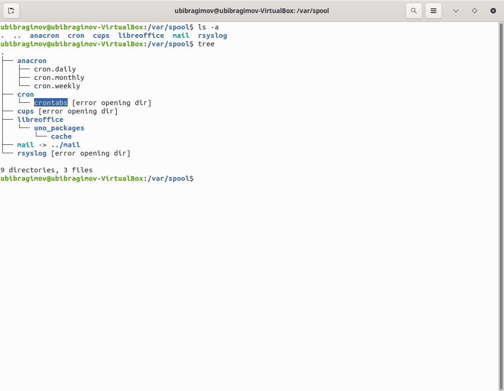

Цель работы
Приобретение практических навыков взаимодействия пользователя с системой посредством командной строки.
Выполнение лабораторной работы
1. Определяем полное имя каталога
2. Переходим в каталог /tmp
- Выводим содержимое

- Определяем есть ли в каталоге
/var/spool подкаталог с именем cron

- Переходим в домашний каталог и выводим содержимое

3. Выполняем след. действия.
- Создаем каталог с именем
newdir.
- В каталоге
~/newdir создаем новый каталог с именем morefun.
- В домашнем каталоге создаем одной командой три новых каталога с именами
letters, memos, misk. Затем удаляем эти каталоги одной командой.

- Создание прошло успешно.

- Попробуем удалить ранее созданный каталог
~/newdir командой rm. Проверим, был ли каталог удалён.
- Удаляем каталог
~/newdir/morefun из домашнего каталога. Проверяем, был ли каталог удалён.
- Каталог был удалён.
4. С помощью команды man определяем, какую опцию команды ls нужно использовать для просмотра содержимое не только указанного каталога, но и подкаталогов, входящих в него.
- Надо использовать опцию
-R -> ls -R.
5. С помощью команды man определяем набор опций команды ls, позволяющий отортировать по времени последнего изменения выводимый список содержимого каталога с развёрнутым описанием файлов.


- Набор опций
-ult позволяет отсортировать по времени последнего изменения выводимый список содержимого каталога с развёрнутым описанием файлов.
6. Используем команду man для просмотра описания следующих команд: cd, pwd, mkdir, rmdir, rm.
7. Используя информацию, полученную при помощи команды history, выполните модификацию и исполнение нескольких команд из буфера команд.
- Выполним команду history;
- Исполним history !325 = cd List;
- Модифицируем и исполним команды
ls -R -> ls -l ; man cd -> man pwd ;


Вывод
В ходе выполнения Лабораторной работы №5, были приобретены навыки по администрированию и взаимодействию с каталогами, файлами и командной строкой
Контрольные вопросы:
- Командная строка - программа, которая служит промежуточным слоем между человеком и машиной и передает друг другу команды и ответы машине и человеку соответственно
- Используется команда pwd -
print working directory
- При помощи команды
ls (-опции) / tree(-опции)
- Скрытые файлы - файлы, которые нежелательны для просмотра, редактирования и перемещения - имеют впереди названия файла точку, чтобы вывести имена скрытых файлов используют
ls -a
- Команда
rm для удаления файла, для удаления папки rmdir
- Используя команду
history
- Используя команду
history, запомнить номер команды, потом написать ошибку и ее замену
- Для таких случаев используется символ
;
- Символ экранирования нужен для того чтобы командная строка не приняла специальные символы
., *, /, ... за команду
ls -l показывает дополнительную информацию о файле - дата изменения, права доступа, список владельцев- Относительный путь — путь к файлу к которому не нужно задавать полное местонахождение, а можно обойтись быстым вводом -
text.txt, при этом файла и терминла должны быть открыты из одного каталога или указать путь orders/text.txt
- Команда
--help
- Вводим первые буквы, нажимаем клавишу
Tab